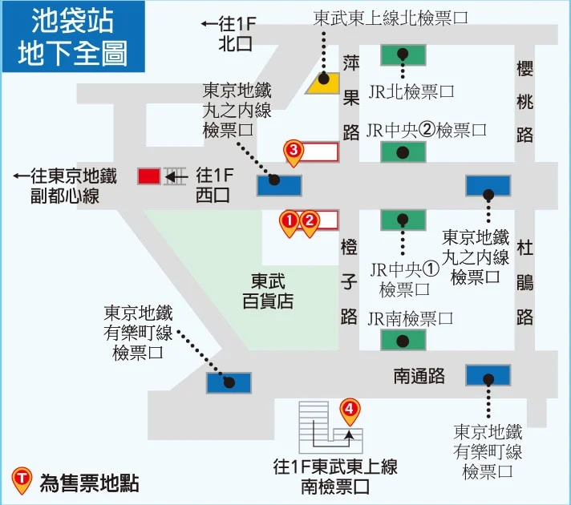
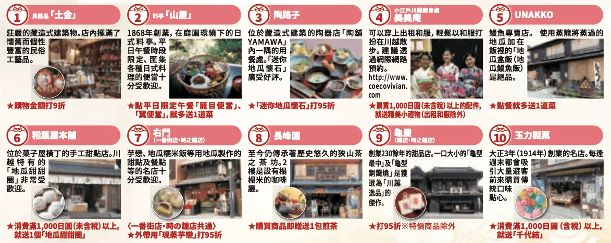
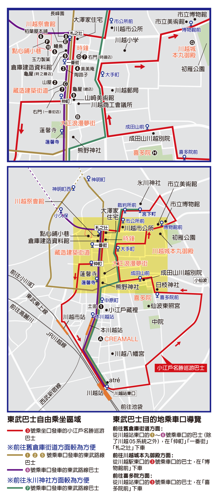
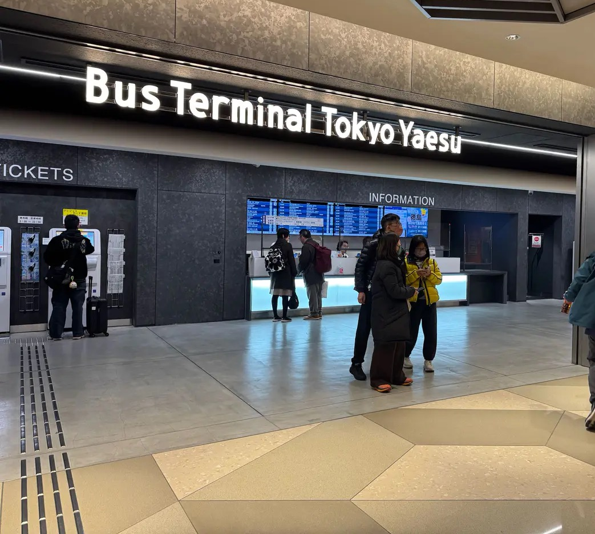
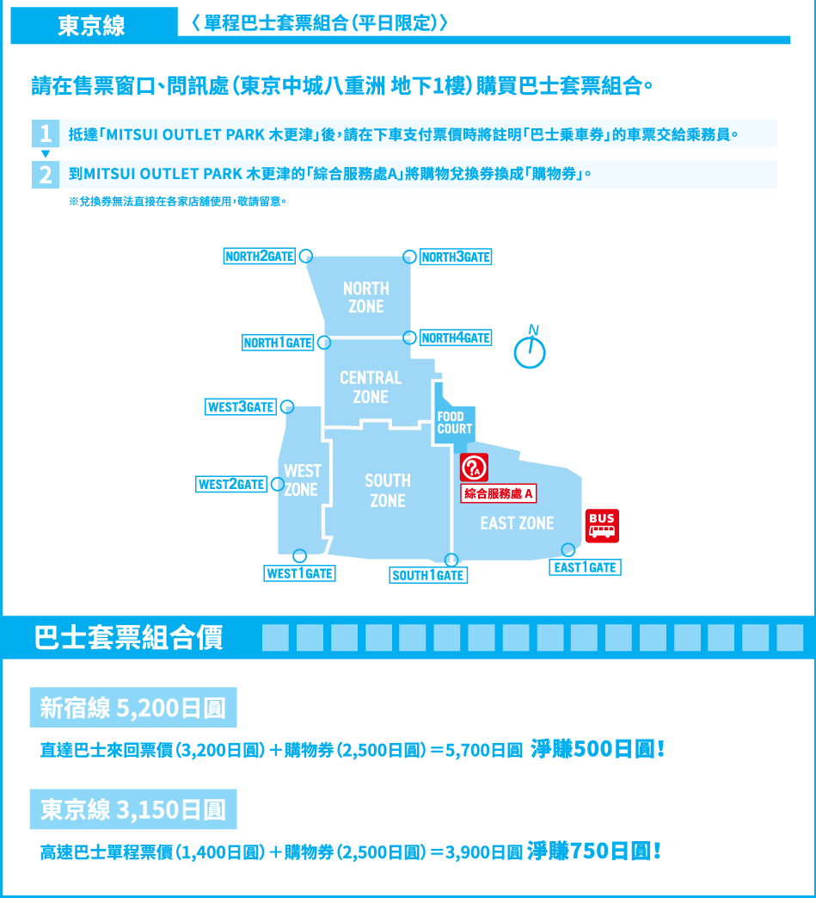

🌸 媽咪與筑筑的日本行 🌸
東京旅遊小書
09:00 出發前往 上野公園
搭乘銀座線🟠 田原町 -> 上野
# 看櫻花
上野東照宮
不忍池
星巴克 上野恩賜公園店
11:15 前往 新宿西口
搭乘山手線🟢 上野 -> 新宿 西口改札
12:00 吃午餐 敘敘苑 新宿 小田急HALC店
13:30 從西口轉到東口
新宿逛街地圖：
伊勢丹百貨
電器城big camera(新宿東口） UQ GU 大創（同一棟）
lumine 下午茶 lumine百貨內 or blue bottle coffee
藥妝：OS、松本清
晚餐
# 推薦烏龍麵
Tsurutontan Shinjuku
晚上 Thermae-Yu 泡湯
08:40 從飯店出發 前往 池袋站 
買早餐！但是動作要快喔！
搭乘銀座線🟠 田原町 -> 銀座
轉乘丸之內線🔴 銀座 -> 池袋
在標註1的地方購買實體票！（KAWAGOE DISCOUNT PASS Premium）
10:00 準時搭乘東武東上線 特急 
30 mins 到 川越市站！！！🚄🚄🚄 吃東西
套票優惠一覽：
10:30 前往 冰川神社 
搭乘07發車口公車
給公車司機看券就可以！
新河岸川在神社後面
如果要穿和服就去先去和服店！
公車路線：
＃午餐推薦
鰻魚飯老店 小川菊
料亭 山屋
蕃薯懷石料理 陶路子
＃必打卡！
菓子屋橫丁
吉依卡哇
miffy
時之鐘
星巴克
08:20 前出發往 東京車站 
路上記得買早餐！
搭乘銀座線🟠 田原町 -> 京橋（東京）
前往現場購買巴士套票（平日優惠券）
東京中城八重洲 · Bus Terminal Tokyo Yaesu
▶️ 點我觀看：跟著youtube影片走～
買完後，搭電扶梯下到地下二樓的12號月台排隊乘車
09:25 搭乘巴士 
50 mins 🚌🚌🚌 （沿途經過彩虹大橋、台場、羽田空港、東京灣橫斷道路）
抵達後記得換購物券！！！
拍一下回程車的時間！！！
歐虧開逛啦！購物券記得用光喔！
回程時排隊直接上車，感應交通IC卡Suica 乘車
10:10 前往 LE CAFE V (LV Cafe)
搭乘銀座線🟠 田原町 -> 銀座
里士滿飯店 淺草 to LE CAFE V
10:40 到達現場 排隊 （11:00營業）
LE CAFE V
吃完就開始逛街啦！
建議按照數字推薦！

銀座三越(護照換95折卡，推薦買護膚美妝）
午餐推薦：
＃壽司
鮨処 銀座福助 本店
＃有名的麵包店！
TRUFFLE mini ecute EDITION 新橋店
10:00 逛UQ 回飯店放東西
12:00 前往 澀谷
搭乘銀座線🟠 田原町 -> 澀谷車站
＃ 午餐推薦
牛舌Negishi
蛋包飯 TAMAGO-KEN SHIBUYA DOGENZAKA
壽喜燒 涮涮鍋 塚田
逛街：
澀谷 109
澀谷 Hikarie 百貨 （11F 免費觀景台 看落日夜景）
＃晚餐推薦
漢堡排
晚上就繼續逛！